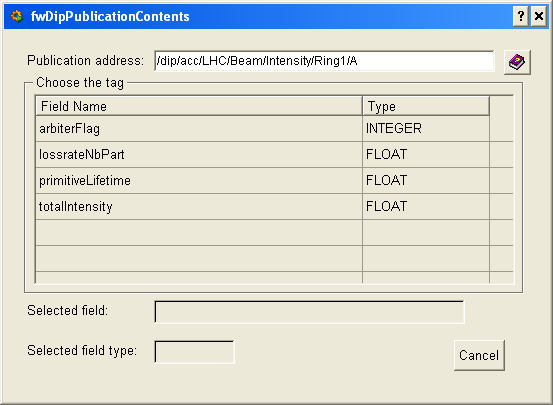

| Panel Name |
fwDipPublicationContents.pnl |
|
| Introduction |
This panel is used to display the details about the DIP publication at a
given address.
It is also used to select the fields of the publication. |
|
| Instructions | In the upper part of the panel the publication address
is being displayed.
The middle section of the panel contains the table with all the fields in the publication and their data-types. Double-clicking on the row with any field will populate the two text boxes in the lower part of the panel. If the "use selected field" is visible ($bBrowser is set to 0), clicking it will return data about selected row to the calling panel. |
|
| Restrictions | ||
|

|
| Dollar Parameters | ||
| Name | Description | |
| $sPublicationAddress | Specifies the address of the DIP publication. | Required |
| $bBrowser | Specifies whether the "use selected field" button is visible
TRUE - The "use selected field" button is hidden. FALSE - The "use selected field" button is visible. |
Required |
| $iInvokedFromMain | Specifies whether the panel will query the API manager for the publication contents or it is being passed as a $-parameters from some previous query. | Optional |
| $sFieldName | Contains a dyn_string with all the field names in the publication converted into a string. | Required if $iInvokedFromMain is defined |
| $iFieldType | Contains a dyn_int with all the field types in the publication converted into a string. | Required if $iInvokedFromMain is defined |
| $sApiManagerDp | Contains the DIP API Manager config DP - which is needed to execute a DIP query. | Required if $iInvokedFromMain is not defined |